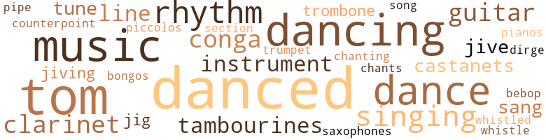
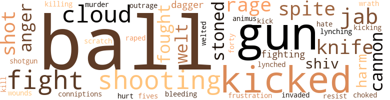
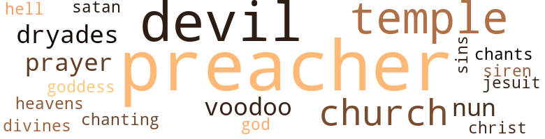

Groove, Bang and Jove Around, by Cannon, Steve (1969)
128 music-related terms matched in this text.
Most frequent terms in this topic: danced (18); dancing (10); music (9); dance (8); singing (6)
bones.n.01
Definition: a percussion instrument consisting of a pair of hollow pieces of wood or bone (usually held between the thumb and fingers) that are made to click together (as by Spanish dancers) in rhythm with the dance
| word | sentence |
|---|---|
| castanets | Drums , castanets , tambourines and the wail of a clarinet filled her eardrums as she walked down the spiral staircase . |
| castanets | The conga drums continued with their beat , slow and rhythmic , the castanets dinged , the tambourines kept up a constant sound , and the clarinet moaned the blues . |
| castanets | The drummers began to beat a slow even rhythm on the conga drums , being joined by others with rings around their knees , bells on their ankles , women mostly , black and white , people playing tambourines and castanets , while Blind Man Willie in a corner , two big gorgeous blondes at his side , wailed on clarinet . |
bongo.n.01
Definition: a small drum; played with the hands
| word | sentence |
|---|---|
| bongos | Rev Afterfacts , white smock flaring in the pale moonlight , looking reddish white in the flaring light , ran through crowds of people dancing and singing , telling jokes and dirty stories , up towards the stage where more people were playing bongos , tom-toms , guitars and paper and combs , dancing , while others watched the action . |
bop.n.02
Definition: an early form of modern jazz (originating around 1940)
| word | sentence |
|---|---|
| bebop | They spoke in hip bebop Oh-Sho-Be-Do-Bee talk , rapping to one another , not being understood by the Governor or the priest who had been trying to reassure them that he was on their side . |
chant.n.01
Definition: a repetitive song in which as many syllables as necessary are assigned to a single tone
| word | sentence |
|---|---|
| Chants | Chants and shouts in Creole and Angolese escaped from their mouths . |
clarinet.n.01
Definition: a single-reed instrument with a straight tube
| word | sentence |
|---|---|
| clarinet | The clarinet wailed blue notes , the bells , cas-tantes and tambourines clanged , clinked and banged , as the drummers underneath paced the beat . |
| clarinet | Drums , castanets , tambourines and the wail of a clarinet filled her eardrums as she walked down the spiral staircase . |
| clarinet | The conga drums continued with their beat , slow and rhythmic , the castanets dinged , the tambourines kept up a constant sound , and the clarinet moaned the blues . |
| clarinets | Music , the sound of drums beating , guitars twanging , trombones playing in a deep low tone , and saxophones , clarinets and trumpets blaring filled the air of the city , as thousands rushed out of houses and flooded the streets , throwing garlands of yellow and red roses into the air , landing atop the Cadillacs and the van , and filling Miles Standish 's nostrils as he lay unconscious on the floor of the van , slobbering all over himself , after his vain attempt to save white womanhood from the hands of blacks . |
| clarinet | The drummers began to beat a slow even rhythm on the conga drums , being joined by others with rings around their knees , bells on their ankles , women mostly , black and white , people playing tambourines and castanets , while Blind Man Willie in a corner , two big gorgeous blondes at his side , wailed on clarinet . |
conga.n.01
Definition: music composed for dancing the conga
| word | sentence |
|---|---|
| conga | The beat of the conga drums pounded through the floor . |
| conga | The conga drums continued with their beat , slow and rhythmic , the castanets dinged , the tambourines kept up a constant sound , and the clarinet moaned the blues . |
| conga | Annette inhaled a long while on the rag , saw daggers sticking out at her from behind their eyes , and her heart started pounding inside her chest like a conga drum . |
| conga | Two brothers in red fezzes and red handkerchieves around their necks sat in one corner beating out a polyrhythmic cadence on conga drums . |
| conga | The drummers began to beat a slow even rhythm on the conga drums , being joined by others with rings around their knees , bells on their ankles , women mostly , black and white , people playing tambourines and castanets , while Blind Man Willie in a corner , two big gorgeous blondes at his side , wailed on clarinet . |
cornet.n.01
Definition: a brass musical instrument with a brilliant tone; has a narrow tube and a flared bell and is played by means of valves
| word | sentence |
|---|---|
| trumpet | She got further down ; sat on the commode , took his ripe joint , limp and fallen , in her mouth , and sucked it hard and hot , rubbing the head all back on her tongue , her cheeks bulging like Diz blowing trumpet , unsnapped the top of his pants , squeezed his balls with one hand and fingerfucked herself with the other . |
counterpoint.n.01
Definition: a musical form involving the simultaneous sound of two or more melodies
| word | sentence |
|---|---|
| counterpoint | The preacher 's wife worked , twisted and moved her ass from side to side , shook her hips up and down , down and up , meeting the jabs of V 's thumb and finger working in counterpoint in her core and up her ass . |
dance.n.01
Definition: an artistic form of nonverbal communication
| word | sentence |
|---|---|
| dance | The old woman was standing before the altar , not a stitch of clothing on , doing some weird dance , as Charles crawled on all fours around on the floor . |
| dance | The mouse did four steps of the new dance in town - called popcorn , stepped back and shimmied for a minute , then went over and picked up the bleeding rooster head . |
| dance | The time before that he had brought back the dance , Ginger Rogers , Fred Astaire , a whole assortment of beast whose wax figures had been placed in thieves ' row , in the white museum prison . |
| dance | Veronica stripped down , did a dance around the corpse - the body of Reverend Afterfacts - as Sapphire , Yoko , Delores and Buck Rogers , who had just that day become a convert , hummed and sang along with the rest . |
| dance | She broke from him and walked towards the bathroom , her ass moving slowly up and down like , doing a sensual dance as she disappeared into the shadows . |
dance.n.02
Definition: a party of people assembled for dancing
| word | sentence |
|---|---|
| dance | A couple of the broads got up and did a snake dance in the middle of the floor . |
dance.v.02
Definition: move in a pattern; usually to musical accompaniment; do or perform a dance
| word | sentence |
|---|---|
| dancing | A male voice shouted out through the speakers , the sound bounced around the room , wrapped Annette 's body in guitars plucking as she dropped her red dress on the floor and began dancing in her drawers . |
dance.v.03
Definition: skip, leap, or move up and down or sideways
| word | sentence |
|---|---|
| danced | She danced near the altar where Marie was mumbling words in the unknown tongue , giving out mojos and passing along black candles . |
| danced | She danced with him for the rest of the set , until the drums slowed down their beat to an almost silent whisper . |
| danced | So she fixed him a plate of gumbo , lit candles at the table , set the altar for him , then danced with the snake . |
| danced | The old woman explained the curse : " After the Governor left that day , your mother scrubbed the front steps for a solid week with red brick , washed it down with scalding hot water , danced before the altar eating shrimp covered with hot cayenne pepper , and prayed in isolation . |
| danced | The redhead from downstairs danced in with Max . |
| danced | The redhead and Max danced around in circles , then they were down on the floor , he was in between her legs , sucking her cunt , working on her twat , while she held his head and laughed out loud . |
| dance | The crowd which was just beginning to dance around the redheaded girl , stopped in the middle of the ceremony and charged towards her . |
| dancing | Marie in the coffin , black snakes , candles flickering in the dark , moon children in the night - all ran through Annette 's mind ; along with people dancing and calling on the spirits , naturals and supernatural , two heads and hants , and curses . |
| dancing | Virginia opened her eyes , closed them real fast , saw images of nightingales dancing on stairs , then felt Annette 's fingers inside the lips of her cunt , working slowly , faster , then slowly , and Annette was staring her in the eyes . |
| danced | Images of lynching niggers and cutting their nuts out , danced inside his skull . |
| danced | Estevanico and Annette danced out of the ladies ' room ; she had on her yellow bellbottom trousers , the black cat bone on a string around her neck , the goof-er dusts in the red handkerchief which she carried in her left hand , her purse in the right . |
| dancing | Little Steven was stepping as if there were no tomorrow , dancing up the aisle , going back on duty . |
| danced | The Oh-Sho-Be-Do-Bee Horse pranced , tipped and danced down the gold-paved street in the glittering sun , the two Cadillacs and the van moving slowly behind Estevanico - on the way - HOME . |
| danced | Children danced up and down the street throwing goofer dust in the path of the house , beating cow skulls , shaking tamborines as the smell of yams , greens , beans , chickens , turkeys and roasting pig filled everyone 's nostrils . |
| dancing | Rev Afterfacts , white smock flaring in the pale moonlight , looking reddish white in the flaring light , ran through crowds of people dancing and singing , telling jokes and dirty stories , up towards the stage where more people were playing bongos , tom-toms , guitars and paper and combs , dancing , while others watched the action . |
| dancing | Big Boy went harder in her ass and cunt , and she worked fe - verishly on the cat on the couch ; they all came in one big orgasm , Big Boy falling to the floor , gitting up holding a limp cock in his hand , then dancing around the stage , buck-naked , waving at the audience , which cheered him on . |
| danced | He danced around for a minute , then moved over to where they lay , touched them , nudged them , then got down on his hands and knees . |
| danced | The night you were born , your father appeared to me in the form of Damballah , and danced around the circle of fire . |
| danced | They danced around the roses and looked around the hill at the cheering , some standing still as they hugged each other in such a long embrace . |
| dancing | Moonbeams filtered in through the windowpanes , blending with the candlelight from the night stand casting fiery black and red shadows dancing on the walls . |
| dancing | When he got back into the room , two dark shadows dancing on the walls , dark bodies seated on the bed , Annette and Bertha , sat next to each other getting it straight in their heads , what the shit was all about . |
| dancing | Then he went back to his room and had diurnal dreams of white and black bitches dancing before him , a couple sucking his dick . |
| dance | He started to dance with her , but she was moving her body so wantonly , so easily around the floor , like it was some amorphous form instead of a solid mass , he simply stood in the middle of the floor , kind of snapping his fingers . |
| danced | The other four jives danced around a circle watching Annette 's moves . |
| dancing | The Jive Five kept the circle tight , moving in and out , dancing around her ; they too somewhat still in a fright . |
| danced | Annette danced around in circles inside the ring , then climbed up on a red-and-white-checker-cloth table and really got into her thing . |
| danced | She danced around the edge of the table doing an astronaut 's spin , bending her ass backwards doing an Afro-grin . |
| danced | Marie danced around in a small circle with the black snake in her arms , let it kiss her lips , slide down her crotch , drop to the floor , picked it up , swung it around over the heads of the others , wrapped it around her neck , its tail eating into her stomach , then dropped it back into the black box . |
| danced | Four women danced around Marie , candles balanced on their heads . |
dirge.n.01
Definition: a song or hymn of mourning composed or performed as a memorial to a dead person
| word | sentence |
|---|---|
| dirge | A fifth voice bellowed , sounding like a trombone playing the bottom of a dirge . |
guitar.n.01
Definition: a stringed instrument usually having six strings; played by strumming or plucking
| word | sentence |
|---|---|
| guitar | His balls still ached , his stomach muscles were tight as guitar strings , and he was so blind with rage he had trouble controlling that he could hardly see anything but the gun , which was a good reminder , before his face . |
| guitars | Music , the sound of drums beating , guitars twanging , trombones playing in a deep low tone , and saxophones , clarinets and trumpets blaring filled the air of the city , as thousands rushed out of houses and flooded the streets , throwing garlands of yellow and red roses into the air , landing atop the Cadillacs and the van , and filling Miles Standish 's nostrils as he lay unconscious on the floor of the van , slobbering all over himself , after his vain attempt to save white womanhood from the hands of blacks . |
| guitars | Rev Afterfacts , white smock flaring in the pale moonlight , looking reddish white in the flaring light , ran through crowds of people dancing and singing , telling jokes and dirty stories , up towards the stage where more people were playing bongos , tom-toms , guitars and paper and combs , dancing , while others watched the action . |
| guitars | While her mother continued to talk , smelling the Indian-African incense which burned on the table in the middle of the room , the smell of barbecued chicken , gumbo and fried rice seeping from under a black door to her back , and hearing the sounds of tom-toms , flutes , piccolos , guitars , pianos and male-female voices and pounding of feet - like some secret ceremony was taking place below - and watching the moon wane and wax , its full face now floating silently on its course through the sky like seeing bats flying back and forth and a crow land on the skylight , flap its wings , then take off again , Annette 's eyes closed by themselves . |
| guitars | A male voice shouted out through the speakers , the sound bounced around the room , wrapped Annette 's body in guitars plucking as she dropped her red dress on the floor and began dancing in her drawers . |
jig.n.01
Definition: music in three-four time for dancing a jig
| word | sentence |
|---|---|
| jig | She stuck her hand down around his behind , pulled his shirt from the rear , while he attacked it from the front , did a funny kind of jig , real funky like he had a lot of soul , and dropped his pants to the floor . |
| jig | Last heard of him , he was dreamin ' of eight pages with Blondie and Dagwood and I Love Lucy doing a jig of the five assholes in a ring , called the Tynan bounce . |
jive.v.01
Definition: dance to jive music; dance the jive
| word | sentence |
|---|---|
| jiving | Things were n't jiving , lining up , nor making sense ; this did not explain anything . |
| jiving | He charged out the room , images flying through his mind , getting himself confused with Adam when caught jiving with Eve , pounded his pud up and down , shot his wad in the toilet bowl . |
| jive | " Hell , yes , I like to fuck , screw and jive around , plus I 'm tired of all this shit about the Church , the School , and these fucked-up rules . " |
music.n.01
Definition: an artistic form of auditory communication incorporating instrumental or vocal tones in a structured and continuous manner
| word | sentence |
|---|---|
| music | Her ass began to jump and her hips to shake as the music bounced around the room with enough heat to melt diamonds . |
| music | She paraded through the aisle of eyes caressing her body , shaking her hips and butt in time to the music , snapping her fingers and dodging and stepping across beer bottles and steins which had crashed to the floor - as customers stomped their feet and pounded the table tops , laughed , joked and cussed one another in time to the music . |
| music | She paraded through the aisle of eyes caressing her body , shaking her hips and butt in time to the music , snapping her fingers and dodging and stepping across beer bottles and steins which had crashed to the floor - as customers stomped their feet and pounded the table tops , laughed , joked and cussed one another in time to the music . |
| music | She was relaxed , looking up at the ceiling , listening to the music of Ray Qarritto which was coming through the speakers . |
| music | Latin soul music was blaring on the speakers . |
| music | The last time out he had brought back the music which the beast had tried to steal , and put it in the white-on-white-in-white museum prison along with the statues of Benny Goodman , Artie Shaw , Barbra Streisand and Janis Joplin . |
| Music | Music , the sound of drums beating , guitars twanging , trombones playing in a deep low tone , and saxophones , clarinets and trumpets blaring filled the air of the city , as thousands rushed out of houses and flooded the streets , throwing garlands of yellow and red roses into the air , landing atop the Cadillacs and the van , and filling Miles Standish 's nostrils as he lay unconscious on the floor of the van , slobbering all over himself , after his vain attempt to save white womanhood from the hands of blacks . |
| music | They got together some music to play while te priest and the Governor got their thing together . |
| music | The food made her hungry , the liquor made her glad , but the music went down to the bottom of her entrails , making her hotter than hell . |
| music | Annette continued to grasp the back edge of the commode , took one hand and flushed it , feeling hot and sweaty , her blood at the boiling point , her skin feeling like a trillion cunts pricking under his touch , and the joy juice oozing down her legs , in and up , both getting hot , moving unconsciously and consciously to the rhythms of the music - inside the Gumbo House - filtering through the walls . |
musical_instrument.n.01
Definition: any of various devices or contrivances that can be used to produce musical tones or sounds
| word | sentence |
|---|---|
| instrument | Even the cockpit , the instrument panel , the people in the cockpit . |
| instrument | They had tied Miles hands behind his back and stuck a gag in his mouth ; Buck lay back in his seat , panting , reading the instrument panel , checking on the amount of fuel the big plane held . |
| instruments | He sat there on the bed , looking first at the band , ' who were quickly packing up their instruments . |
| instruments | The tom-tom 's beat increased in tempo and became louder , the singing clearer , as the notes from the instruments rose and swelled and floated through the room , coming up from the bottom and making the whole room shake . |
piano.n.01
Definition: a keyboard instrument that is played by depressing keys that cause hammers to strike tuned strings and produce sounds
| word | sentence |
|---|---|
| pianos | While her mother continued to talk , smelling the Indian-African incense which burned on the table in the middle of the room , the smell of barbecued chicken , gumbo and fried rice seeping from under a black door to her back , and hearing the sounds of tom-toms , flutes , piccolos , guitars , pianos and male-female voices and pounding of feet - like some secret ceremony was taking place below - and watching the moon wane and wax , its full face now floating silently on its course through the sky like seeing bats flying back and forth and a crow land on the skylight , flap its wings , then take off again , Annette 's eyes closed by themselves . |
piccolo.n.01
Definition: a small flute; pitched an octave above the standard flute
| word | sentence |
|---|---|
| piccolos | While her mother continued to talk , smelling the Indian-African incense which burned on the table in the middle of the room , the smell of barbecued chicken , gumbo and fried rice seeping from under a black door to her back , and hearing the sounds of tom-toms , flutes , piccolos , guitars , pianos and male-female voices and pounding of feet - like some secret ceremony was taking place below - and watching the moon wane and wax , its full face now floating silently on its course through the sky like seeing bats flying back and forth and a crow land on the skylight , flap its wings , then take off again , Annette 's eyes closed by themselves . |
pipe.n.04
Definition: a tubular wind instrument
| word | sentence |
|---|---|
| pipe | The pipe in her right hand was hand-carved in the image of a man who looked like Doctor John . |
rhythm.n.04
Definition: the arrangement of spoken words alternating stressed and unstressed elements
| word | sentence |
|---|---|
| rhythm | Basie 's bund was playing some low-down , down , real uptight blues , a two-beat rhythm made for the slow drag as young dudes waited in line to take on the three broads who sat on couches in front of the stage . |
| rhythms | She worked her mouth to the rhythms of the band , the soul-clapping hands of the audience and the movement of his body as he tugged at her red head . |
| rhythms | Dip climbed up on the bed with his joint sticking up in the air , pulsating up and down inside the rhythms of his pulse and heart , as images of ofay chicks with great big titties and extra-large hips flashed through his mind . |
| rhythm | The water from the faucet dripped in a two-beat rhythm into the tub . |
| rhythms | Annette moved her ass to the rhythms of the beat , shaking her thighs with her pinkish brown pussy quivering in the heat . |
| rhythms | Annette continued to grasp the back edge of the commode , took one hand and flushed it , feeling hot and sweaty , her blood at the boiling point , her skin feeling like a trillion cunts pricking under his touch , and the joy juice oozing down her legs , in and up , both getting hot , moving unconsciously and consciously to the rhythms of the music - inside the Gumbo House - filtering through the walls . |
| rhythm | The drummers began to beat a slow even rhythm on the conga drums , being joined by others with rings around their knees , bells on their ankles , women mostly , black and white , people playing tambourines and castanets , while Blind Man Willie in a corner , two big gorgeous blondes at his side , wailed on clarinet . |
| rhythms | They swayed bare asses , shook thighs , tits moving round like shaking off flies ; and clapped their hands to the pulsating rhythms emanating from the drums . |
sax.n.02
Definition: a single-reed woodwind with a conical bore
| word | sentence |
|---|---|
| saxophones | Music , the sound of drums beating , guitars twanging , trombones playing in a deep low tone , and saxophones , clarinets and trumpets blaring filled the air of the city , as thousands rushed out of houses and flooded the streets , throwing garlands of yellow and red roses into the air , landing atop the Cadillacs and the van , and filling Miles Standish 's nostrils as he lay unconscious on the floor of the van , slobbering all over himself , after his vain attempt to save white womanhood from the hands of blacks . |
section.n.01
Definition: a self-contained part of a larger composition (written or musical)
| word | sentence |
|---|---|
| section | He heard a door open and shut somewhere to his left front , closed his eyes for a minute , and when he opened them he heard water running in the bathroom , another , couple moaning and sighing , and a girl softly crying in another section of the house . |
sing.v.02
Definition: produce tones with the voice
| word | sentence |
|---|---|
| sang | Annette snapped her fingers , turned and faced the crowd of high-school and college drop-outs , bullshit hustlers with their dates , and funeral directors ' sons out for a night on the make , and sang along with the Temptations . |
| singing | The rest of the company formed a circle around Doc John and joined him in singing the Voodoo Death Mask , the song of no return . |
| sang | Veronica stripped down , did a dance around the corpse - the body of Reverend Afterfacts - as Sapphire , Yoko , Delores and Buck Rogers , who had just that day become a convert , hummed and sang along with the rest . |
| sang | We parted back that night , rejoiced and sang , then he disappeared in the night air , just at dawn as the sun came up , blood-red and orange . |
singing.n.01
Definition: the act of singing vocal music
| word | sentence |
|---|---|
| singing | They were smoking weed , blowing coke and clapping their hands , singing and dancing as plates upon plates of food were passed around to all - a real blow-out . |
| Singing | Singing and dancing were coming from the picnic ground . |
| singing | Rev Afterfacts , white smock flaring in the pale moonlight , looking reddish white in the flaring light , ran through crowds of people dancing and singing , telling jokes and dirty stories , up towards the stage where more people were playing bongos , tom-toms , guitars and paper and combs , dancing , while others watched the action . |
| singing | Asshole Jerk , Shitface Turds , Big Boy and Steps lifted the body which had now turned to stone and carried it on their shoulders , the women dancing and singing all around them . |
| singing | The tom-tom 's beat increased in tempo and became louder , the singing clearer , as the notes from the instruments rose and swelled and floated through the room , coming up from the bottom and making the whole room shake . |
| singing | Birds in the trees started singing and tomtom beating . |
song.n.01
Definition: a short musical composition with words
| word | sentence |
|---|---|
| song | The rest of the company formed a circle around Doc John and joined him in singing the Voodoo Death Mask , the song of no return . |
swing.n.05
Definition: a style of jazz played by big bands popular in the 1930s; flowing rhythms but less complex than later styles of jazz
| word | sentence |
|---|---|
| jive | Ya 'll wants to screw but come on all jive and ai n't got the guts of your own convictions . " |
| jives | The other four jives danced around a circle watching Annette 's moves . |
tambourine.n.01
Definition: a shallow drum with a single drumhead and with metallic disks in the sides
| word | sentence |
|---|---|
| tambourines | The clarinet wailed blue notes , the bells , cas-tantes and tambourines clanged , clinked and banged , as the drummers underneath paced the beat . |
| tambourines | Drums , castanets , tambourines and the wail of a clarinet filled her eardrums as she walked down the spiral staircase . |
| tambourines | The conga drums continued with their beat , slow and rhythmic , the castanets dinged , the tambourines kept up a constant sound , and the clarinet moaned the blues . |
| tambourines | The drummers began to beat a slow even rhythm on the conga drums , being joined by others with rings around their knees , bells on their ankles , women mostly , black and white , people playing tambourines and castanets , while Blind Man Willie in a corner , two big gorgeous blondes at his side , wailed on clarinet . |
tenor_drum.n.01
Definition: any of various drums with small heads
| word | sentence |
|---|---|
| tom-tom | One of the brothers went and got an African tom-tom , another got a flute . |
| tom-toms | The beating of tamborines , bells , tom-toms , and the full-force sound of Basie 's band up on the stage happily blowing the blues away , kept everybody 's spirits up , feeling mellow and cool . |
| tom-toms | Rev Afterfacts , white smock flaring in the pale moonlight , looking reddish white in the flaring light , ran through crowds of people dancing and singing , telling jokes and dirty stories , up towards the stage where more people were playing bongos , tom-toms , guitars and paper and combs , dancing , while others watched the action . |
| tom-toms | Your father was a messenger of Damballah , who traveled throughout the South , bringing the sisters and brothers closer together , teaching them to play the tom-toms , to speak of the signs , and to know each other through the vibrations of the universe . |
| tom-toms | While her mother continued to talk , smelling the Indian-African incense which burned on the table in the middle of the room , the smell of barbecued chicken , gumbo and fried rice seeping from under a black door to her back , and hearing the sounds of tom-toms , flutes , piccolos , guitars , pianos and male-female voices and pounding of feet - like some secret ceremony was taking place below - and watching the moon wane and wax , its full face now floating silently on its course through the sky like seeing bats flying back and forth and a crow land on the skylight , flap its wings , then take off again , Annette 's eyes closed by themselves . |
| tom-tom | The tom-tom 's beat increased in tempo and became louder , the singing clearer , as the notes from the instruments rose and swelled and floated through the room , coming up from the bottom and making the whole room shake . |
| tom-toms | The tom-toms were beating , he dropped a black snake in my lap and gave me some wine to drink . |
tone.v.01
Definition: utter monotonously and repetitively and rhythmically
| word | sentence |
|---|---|
| chanting | She heard people chanting softly around her , a few asking questions about her - Charles and the big black man answering them in low whispers . |
trombone.n.01
Definition: a brass instrument consisting of a long tube whose length can be varied by a U-shaped slide
| word | sentence |
|---|---|
| trombones | Music , the sound of drums beating , guitars twanging , trombones playing in a deep low tone , and saxophones , clarinets and trumpets blaring filled the air of the city , as thousands rushed out of houses and flooded the streets , throwing garlands of yellow and red roses into the air , landing atop the Cadillacs and the van , and filling Miles Standish 's nostrils as he lay unconscious on the floor of the van , slobbering all over himself , after his vain attempt to save white womanhood from the hands of blacks . |
| trombone | A fifth voice bellowed , sounding like a trombone playing the bottom of a dirge . |
tune.n.01
Definition: a succession of notes forming a distinctive sequence
| word | sentence |
|---|---|
| line | The brothers on the drums pounded even harder , mixing rim shots with shouts , egging the dancers on ; they now moved around the room , the entire place was caught up in the act , forming one long line moving in and out of circles and shaking their be-hinds . |
| tune | Annette gave her a thin-lipped smile and concentrated on the tune running through her mind . |
| line | When she was a little baby her father had left her abandoned on a hill ; she had been stolen and put through changes with the Indians , then the Negroes took her and made her sell pussy , afterwards she went back to her own people and got this permanent job with the Governor 's line . |
| tunes | She sensed something was wrong , wondering what had happened to the tunes of the Lawrence Welk orchestra . |
| line | Like the time the president had told Estevanico to be cool , lower his voice and stop all the complaining and stay in his place , and Estevanico had got the motherfucker 's wife , his daughter and his granma too and fucked them in the ass , the mouth , the ear , eyes , under armpits and all up and down the White House lawn , twelve o'clock at night , during a full moon , and made them get in line , on their knees , bark like dogs , crow like roosters , neigh like horses and grunt like pigs . |
| line | He got hot and excited watching the broads working out on the stage , the young bucks waiting their turn in line , looking at all that fine , luscious , without-fear-of-being-lynched white meat on the stage , taking on the brothers . |
| tune | She dropped a coin in the slot , and picked a tune . |
whistle.v.01
Definition: make whistling sounds
| word | sentence |
|---|---|
| whistled | Estevanico patted her behind , whistled for the black colt to come over , and told her to get on . |
| whistle | She rocked back and forth ; the springs gave a whistle as she shook the bed like an elephant 's cradle . |
157 violence-related terms matched in this text.
Most frequent terms in this topic: balls (47); gun (7); kicked (7); shooting (7); guns (5)
abrasion.n.01
Definition: an abraded area where the skin is torn or worn off
| word | sentence |
|---|---|
| scratch | Blue and his boys were lucky ; they got away without a scratch . |
anger.n.01
Definition: a strong emotion; a feeling that is oriented toward some real or supposed grievance
| word | sentence |
|---|---|
| anger | Suddenly , through a flash of anger blended with desire , Annette turned and let Virginia 's hot slobbering tongue slide down her throat . |
| anger | Coolout Williams , Poncho and Maceo led Buck Rogers and Miles Standish down the gangplank and were about to put them in a car , when Miles Standish - upon seeing Virginia , her golden-bronzed body glittering in the sun , yellow hair falling over her face and breasts sticking out as if ready to be embraced , her core protruding , showing black hairs around her crotch , and tiny beads of sweat breaking out all over her skin - went mad with anger , went into a fit of rage while images of cutting brothers nuts out , pouring gasoline into the sacs and setting asses afire ran through his mind , broke loose from Coolout and headed for the van . |
| anger | Her heart pounded like a jackhammer slipping in mud , blood shot to her temples as hot anger crimsoned her bronzed skin ; she was madder than a straight chick at a lesbian 's ball . |
animosity.n.01
Definition: a feeling of ill will arousing active hostility
| word | sentence |
|---|---|
| animus | But one look at Marie changed all that ; this woman was so sensuous , beautiful and clean - the animus of old men 's dreams , young boy 's schemes ; she would make Raquel Welch bow down on her knees . |
bleeding.n.01
Definition: the flow of blood from a ruptured blood vessel
| word | sentence |
|---|---|
| bleeding | The mouse did four steps of the new dance in town - called popcorn , stepped back and shimmied for a minute , then went over and picked up the bleeding rooster head . |
cannon.n.04
Definition: heavy automatic gun fired from an airplane
| word | sentence |
|---|---|
| cannon | Chavez asked of Buck , his gun in his hand , looking like an oversized cannon . |
| cannon | What ya doing , point-in that cannon in mah direction for ? " |
| cannons | You sure did n't waste any time gitting here , " Estevanico addressed himself to Shitface and Asshole , both with cannons in their hands , aimed at the whiteys on the plane . |
cloud.n.05
Definition: suspicion affecting your reputation
| word | sentence |
|---|---|
| Cloud | The sun had settled down in the west , below Cloud Nine . |
| Cloud | He jumped up on the stage as the band broke out into a swing tune - something about Cloud Nine - knocked over microphones , pulled down stuffed lions , tigers , wolves and snakes , and knocked over candles which burned on the altar , and charged past Virginia who lay sprawled out on the couch , taking in her cunt , some cat who was rocking and swinging and really juicing her down while two dudes pulled at her nipples , their joints in their hands , and another stud gave it to her in the mouth . |
| cloud | A dense black cloud covered the sky , and as the car sped along a long stretch of flat black-top road at a speed exceeding one hundred and twenty miles an hour , the road was clear of foliage except blue grass growing on either side . |
| Cloud | On Cloud Nine . |
| Cloud | Inside her bowels the hot sausage sandwich played hell , moving the beer and reefer smoke on the side so it too could get out , as Annette farted and grunted , listening to the Temptations singing " Cloud Nine . " |
| Cloud | Behind the three beers , the food in her stomach , the Coke in her lungs , she had floated out past the promised land , on the other side of " Cloud Nine . " |
dagger.n.01
Definition: a short knife with a pointed blade used for piercing or stabbing
| word | sentence |
|---|---|
| daggers | Annette inhaled a long while on the rag , saw daggers sticking out at her from behind their eyes , and her heart started pounding inside her chest like a conga drum . |
| dagger | A light feeling of suspicion shot through Annette 's mind , like a dagger up the ass . |
fight.n.05
Definition: a boxing or wrestling match
| word | sentence |
|---|---|
| fight | Marie , Flattop 's bar , home , the fight with Moms , her brother , Dip and Bertha , and Sleepy Willie in the john , it all came back to her like the clanging of bells . |
| fights | Faggots and sissies , lesbians and dykes , sending him poison-pen letters from all the four corners of the earth because now everyone wished to go straight and forget about their fights . |
| fights | " He probably went back to his mother 's pad ; that 's what he always does when he has fights with his ol' lady . |
| fight | Flattop tried to call the whole thing off as a fight broke out right near the table , knocking Annette off the top , back down in the sawdust , down on her knees . |
| fights | Fist fights had broken out , and shooting was taking place all over the bar , people running for cover , away from this dive . |
| fights | When the fist fights had started , the lights had gone out and the shooting began . |
| fight | The way she had originally planned it , she was going to stay with Blue , but that fool had got in the fight , that was the last she 'd see of that . |
fight.v.02
Definition: fight against or resist strongly
| word | sentence |
|---|---|
| fought | De Sade and Henry Miller fought inside his skull with Harold Robbins and Jacqueline Susann . |
| fought | A slight feeling of horror mixed with a strange feeling of desire fought for possession of her body . |
| fighting | Images of him and her mother fussing and fighting over a lousy coupla bucks , threatening to cut one another ; then balling in the kitchen , the hallways and down on the couch in the living room , flashed through her mind like a film being rewound . |
| fought | Frustration and despair fought each other inside her mother 's chest . |
| fighting | She reached down behind and under her ass , grabbed his joint and slipped it in her well-juiced young , not-over-fourteen , dripping-come-all-over-the-commode cunt , squeezing with her muscles and looking in his eyes as she shook her ass , up and down , sideways front and backwards , both of them moving now , their lips glued together , tongues fighting inside their mouths , and feeling transported like Onassis and Jackie on a love seat instead of on this dirty-assed commode . |
fit.n.01
Definition: a display of bad temper
| word | sentence |
|---|---|
| conniptions | V almost had conniptions . |
flog.v.01
Definition: beat severely with a whip or rod
| word | sentence |
|---|---|
| welted | He hit her a lick which welted blueblack red black and blue marks from the base of her neck , traveled the length of her spine and got her between the cracks of her asshole , the tip of the rope tingling her pussy . |
forty-five.n.01
Definition: a .45-caliber pistol
| word | sentence |
|---|---|
| forty-fives | She dug the wheel of forty-fives spinning on its axis . |
frustration.n.03
Definition: a feeling of annoyance at being hindered or criticized
| word | sentence |
|---|---|
| Frustration | Frustration and despair fought each other inside her mother 's chest . |
fury.n.01
Definition: a feeling of intense anger
| word | sentence |
|---|---|
| rage | His balls still ached , his stomach muscles were tight as guitar strings , and he was so blind with rage he had trouble controlling that he could hardly see anything but the gun , which was a good reminder , before his face . |
| rage | Coolout Williams , Poncho and Maceo led Buck Rogers and Miles Standish down the gangplank and were about to put them in a car , when Miles Standish - upon seeing Virginia , her golden-bronzed body glittering in the sun , yellow hair falling over her face and breasts sticking out as if ready to be embraced , her core protruding , showing black hairs around her crotch , and tiny beads of sweat breaking out all over her skin - went mad with anger , went into a fit of rage while images of cutting brothers nuts out , pouring gasoline into the sacs and setting asses afire ran through his mind , broke loose from Coolout and headed for the van . |
| rage | He was whimpering like some mad animal , grunting like a pig ; he jumped up and down on the sidewalk , white-hot mad with rage . |
| rage | A sudden sense of superiority mixed with rage caused her throat muscles to contract . |
gag.v.06
Definition: cause to retch or choke
| word | sentence |
|---|---|
| choked | She jumped out of the chair , the wig flew off her head , the tight curls on her head made her look like Topsy ; her mouth flew open , and a shriek choked in her throat . |
gun.n.01
Definition: a weapon that discharges a missile at high velocity (especially from a metal tube or barrel)
| word | sentence |
|---|---|
| guns | The warning light came on when Poncho and the gusano entered , guns drawn , and demanded a change in flight directions . |
| guns | Suddenly , without remembering that the Mexican and the Cuban were standing in the small aisle with drawn guns in their hands , he unfastened himself from his seat , and with that constant pain in his nuts , swung wildly with both fists , knocking them both out of his way , and started towards the conversation pit . |
| gun | Miles dropped his hands to his sides , while Chavez went immediately to the driver 's seat , his gun aimed at Buck , whose limp joint hung between his thighs . |
| gun | Chavez asked of Buck , his gun in his hand , looking like an oversized cannon . |
| guns | Buck 's eyes bucked in his skull and his teeth began to chatter , not that he was afraid of Cubans , but he had a thing about guns . |
| gun | Chavez unzipped his fly , the gun still aimed at Buck , the plane on automatic pilot , flying through dense black clouds . |
| gun | His balls still ached , his stomach muscles were tight as guitar strings , and he was so blind with rage he had trouble controlling that he could hardly see anything but the gun , which was a good reminder , before his face . |
| gun | Shitface repeated , waving the gun in his right hand , " Okay , women out first . |
| gun | Shitface followed , gun in hand , Reverend Afterfacts , Max in his priest outfit , and the Governor who was limping down the steps . |
| guns | His thoughts were back in Kansas City where he was a heist man , before getting Involved with Black Hawk , selling guns to revolu-tionaries or anyone else who wanted to go to war , then seeking this place as his final hideaway . |
| guns | The cops showed up five cars full , guns drawn and ready for action as the place went up in flames . |
| gun | By the time the cops got ready to charge the place , most of the people were gone , Flattop was standing in the doorway , his gun still drawn . |
harm.v.01
Definition: cause or do harm to
| word | sentence |
|---|---|
| harm | They do n't harm them at all . " |
hate.n.01
Definition: the emotion of intense dislike; a feeling of dislike so strong that it demands action
| word | sentence |
|---|---|
| hate | As she waved to those she knew she got frightful stares mixed with admiration and hate - ambivalence from broads who did n't know her . |
hurt.v.04
Definition: cause damage or affect negatively
| word | sentence |
|---|---|
| hurt | The pain was so intense , the cracker 's body immediately assumed a fetus position with pain shooting through his feet , up his legs , his kneecaps numb they hurt so bad , his groin balled up in pain so intense his balls ached . |
indignation.n.01
Definition: a feeling of righteous anger
| word | sentence |
|---|---|
| Outrage | Outrage and panic shot through her body , but subsided into a childish passion mixed with grief and despair . |
injury.n.01
Definition: any physical damage to the body caused by violence or accident or fracture etc.
| word | sentence |
|---|---|
| harm | She smiled cynically at her mother , but did n't feel any harm . |
invade.v.01
Definition: march aggressively into another's territory by military force for the purposes of conquest and occupation
| word | sentence |
|---|---|
| invaded | Annette picked up on the vibrations ; knew that somewhere behind the eyes hope had ceased to exist , saw the sense of the tragic that invaded his face , and knew right away that this cat was lost , forget about him being her father , he was out of it . |
jab.n.02
Definition: a quick short straight punch
| word | sentence |
|---|---|
| jabs | The preacher 's wife worked , twisted and moved her ass from side to side , shook her hips up and down , down and up , meeting the jabs of V 's thumb and finger working in counterpoint in her core and up her ass . |
| jab | He worked his joint up and down in her crotch , lowered her to the floor and continued to jab . |
| jabs | He continued the motions , breathing hard , looking down at her back , grinning from car to ear , like a mad Sonny Liston , as Veronica , down on her elbows and knees , moved her ass up and down , back and forth , to meet Sambo 's jabs . |
| jab | The scar on his right temple jumped , the muscles on his face twitched , he stepped forward and had knocked the Governor to the ground with a backhanded jab before anyone could say Nixon 's nuts . |
| jabs | They started again as he slipped it in , Annette laying on top of him , moving her ass to meet his jabs - slowly at first , then faster and faster , then slow , and fast , each feeling the other like a second rebirth . |
kick_back.v.02
Definition: spring back, as from a forceful thrust
| word | sentence |
|---|---|
| kicked | She remembered him , the driver who Marie had kicked in the face and caused to yelp like a dog , and then . . . slowly it came back . |
| kicked | Then he kicked the car in gear , backed out to Dryades Street , dropped down to first and barely missed running into the side of a taxi as he turned right on Louisiana Avenue , headed towards the river . |
| kicked | He snooped behind her , like Nixon trailing Eisenhower , got in on the left side of the Mustang , dropped it in reverse without saying a word , backed up on Dryades , kicked it in drive , and burned rubber turning on Louisiana Avenue headed towards the Bayou , passed Holy Ghost Church with candles burning inside like it was a Witches ' Sabbath , and turned on the FM . |
| kicked | She kicked him in the head , on the shoulders and started yelling , " No , Bishop , no ! |
| kicked | They were all either tarred , feathered and kicked out of town ; or lynched and hanged like they used to do the colored folks less than ten years prior . |
| kick | Sambo tried to kick him away . |
| kicking | Annette screamed in passion , tears rolling down her cheeks , kicking up her legs and clenching his neck , then laying back helpless on the bed . |
| kicked | Her mother raced her around the room , Annette dodged and kicked , then stood over in a corner , and started yelling , " Shit ! |
| kicked | Marie looked down , frowned , jackknifed her right leg and kicked him dead in the face . |
kill.v.10
Definition: cause the death of, without intention
| word | sentence |
|---|---|
| killing | Coolout , his mind totally conscious of everything going on around him - the black horse neighing , the women crying , the men looking sad in the back of the Cadillac , their eyes on the actions , and Miles charging towards him - thought first of killing the bastard , shooting him dead in the head , then building a tar fire and burning his ass to cinders . |
| kill | She started feeling paranoid again , plus dizzy at the same time , thinking either they were going to rob her , rape her , or kill her and take her bread . |
knife.n.02
Definition: a weapon with a handle and blade with a sharp point
| word | sentence |
|---|---|
| knife | Flattop charged in with a knife in his hand ; it flashed in the sunlight that poured in through the window . |
| knife | The knife sliced air . |
| knife | The broad jumped up , grabbed Flattop 's arm , let him feel her titties ; he dropped the knife on the ground , grinned and got hot between the thighs . |
| knife | He came back with a white dove , split it open with a butcher knife , placed it over Rev Afterfacts head and let the blood drip down his face . |
lynch.v.01
Definition: kill without legal sanction
| word | sentence |
|---|---|
| lynching | Images of lynching niggers and cutting their nuts out , danced inside his skull . |
| lynched | They were all either tarred , feathered and kicked out of town ; or lynched and hanged like they used to do the colored folks less than ten years prior . |
malice.n.01
Definition: feeling a need to see others suffer
| word | sentence |
|---|---|
| spite | He was crazy ' bout her big legs , her big wide hips , the fat firm breasts , in spite of the fact that her face was so ugly . |
| spite | He felt mellow , cool , really together , in spite of the shake-up at the picnic and all the shit he had been through . |
| spite | Annette got it , in spite of its enigmatic leanings ; she knew he was the devil . |
| spite | His penis was harder than he had ever witnessed in himself , in spite of the fact that he had been playing with it since he was nine . |
murder.n.01
Definition: unlawful premeditated killing of a human being by a human being
| word | sentence |
|---|---|
| murder | For he had heard about your father , and had been told that he held the secrets of the city , all the white and colored folks ' business in the palm of his hand - though he thought of him as being some strange witch doctor who performed murder rites . |
musket_ball.n.01
Definition: a solid projectile that is shot by a musket
| word | sentence |
|---|---|
| balls | She squirmed , stooped further down , sending her ass riding higher off the ground , on the balls of her feet , her knees round the middle of the commode , her hands grabbing the back of the toilet , her head down , almost inside the commode , her eyes looking at its rim as she shook her ass up and down , sideways and round and round , feeling the weight of his body as he charged her - like a bull behind some Spanish Fly , sailing into a cow . |
| balls | She dropped her palms to the floor , shoved her ass in the air , covered him with pussy , feeling the balls of her feet getting hotter and hotter , as her stomach contracted and her titties became firm and stiff , watching his head as it bobbed up and down , down between her luscious thighs . |
| balls | He rushed right by them , went over where Larry and Judy were sprawled out on the floor , her big white thighs around his neck , red-lipped blackhaired cunt in his mouth , she working his balls and joint while he blew her cunt . |
| balls | He looked up over her mound , feeling his balls getting tighter . |
| balls | The glass balls for eyes reflected the one lit candle . |
| balls | She got down on her knees , kissed him around the balls . |
| balls | Red continued to suck her cunt , his hands wrapped around Purple 's balls . |
| balls | Her heart was pounding , her chest was like sticks of dynamite exploding , cold sweat popped off her skin the size of tennis balls ; she felt cold and warm at the same time as she hurried through the house trying to catch her breath . |
| balls | His voice retorted ; his eyes glanced down , then looked straight ahead , as his rod protested while Annette played with his balls , fingered his ass , and palmed dick 's head . |
| balls | Dip wanted to ask a couple of questions , but her lips and tongue were working with a monotonous regularity that he could not challenge with his palm , making the blood rush to his balls , into his joint . |
| balls | She started licking his asshole , squeezing his balls and fingering her pussy all at the same time . |
| balls | Virginia inhaled deeply and swallowed hard , her tongue still up his ass , her hands on his balls . |
| balls | She clutched Stevie 's balls in her hand and squeezed real hard . |
| balls | He could n't go for no faggot fingering his balls . |
| balls | This accomplished - which took up at least twenty minutes - his wife swooning , sighing softly , crying joyfully to herself , clutching his head and helping him in his ritual , he straddled her body , pulled on his eight inches and dropped two balls of sperm on her stomach . |
| balls | His balls still ached , his stomach muscles were tight as guitar strings , and he was so blind with rage he had trouble controlling that he could hardly see anything but the gun , which was a good reminder , before his face . |
| balls | She had her head on his thighs , half his joint in her mouth , saliva all over it , and was fingering his balls . |
| balls | She reached further down , her legs spread open , and pulled at his balls . |
| ball | Steps sat next to him with a double-barrel shotgun and poison arrows , tossing a conjure ball up in the air . |
| ball | Feeling low and square , bashful as a faggot at a bulldagger 's ball , Dip took the crumpled bills out of his pocket and threw them on the table . |
| balls | The pain was so intense , the cracker 's body immediately assumed a fetus position with pain shooting through his feet , up his legs , his kneecaps numb they hurt so bad , his groin balled up in pain so intense his balls ached . |
| balls | The brother grabbed him by the prick , pulled it for him a couple times , squeezed his balls and stuck up a finger , working it over the Governor 's ass . |
| balls | The Governor cried out in pain , his face turned red , and he reached underneath and grabbed Max 's balls as he worked ass backwards and forwards . |
| balls | They tongue-kissed one another like a man and a woman , rubbing their hands all over each other 's bodies , playing with each other 's balls , fingering assholes and tickling ears . |
| balls | Her head eased forward towards his balls , clasping his swipe between her thick lips , tongue caressing the head of his dick , and back to the tip . |
| balls | His penis was harder than a sack of wet cement drying in the sun , and his balls felt blue , and ached . |
| balls | She sucked his balls , fingered his ass , nibbled on his cock , kissed his belly , pulled on his prick , took it in her ear , ran it over her eyelids , and squeezed hard on his joint , got doubly excited as the band raised the tempo to a fiery pitch . |
| balls | Rocking and rolling mouths going up and down , the stud with his fingers up the cheeks of her ass , his tongue in her cunt , his chin on her clit , while she was laying him with his balls on her chin and his member slipping slowly in and out of her pouting mouth . |
| balls | She grabbed his balls , crawled backwards towards the bed on her hands and knees , jerking her head ; massaged his joint with her tongue , lips and bottom teeth . |
| balls | Annette released her hold on his penis , let it slip over her breast as she got off her knees , and clutched his balls with her right hand , running her left up and down his spine , in his ear and through his hair . |
| balls | Annette murmured in her little girl 's voice , grabbed his balls and pushed - with her one hundred and two pounds - Dip over to the right . |
| balls | Her fingers toyed with his limp member , his balls and pubic hair . |
| balls | Bertha grunted and relaxed her big body back on the bed , kissing Dip 's feet , while Annette stuck two fingers up her squishing cunt , and sucked Dip 's joint , squeezing his balls until it was all over for the three of them . |
| balls | He took his joint in his hand , miled it once or twice , then trudged over to the bed , got over Annette 's head , grabbed Bertha 's ass , and started to shove his member straight in while Annette , at the bottom , held on to his balls . |
| balls | Annette let go of Dip 's balls , rubbed Bertha 's thighs and pulled , with her right hand , Dip 's joint with her fingers wrapped around it . |
| balls | She got further down ; sat on the commode , took his ripe joint , limp and fallen , in her mouth , and sucked it hard and hot , rubbing the head all back on her tongue , her cheeks bulging like Diz blowing trumpet , unsnapped the top of his pants , squeezed his balls with one hand and fingerfucked herself with the other . |
| ball | Her heart pounded like a jackhammer slipping in mud , blood shot to her temples as hot anger crimsoned her bronzed skin ; she was madder than a straight chick at a lesbian 's ball . |
| balls | It started feeling so good , she chafed it against her face , faster and slower , slower faster , and kissed the black wiry hairs around his balls , letting her fingers pierce his ass , sending chills up his spine , down his legs , causing him to jerk and twist , push and pull . |
| balls | His balls tightened , the blood drained into his joint swelling it bigger and bigger ; he felt it coming . |
| balls | Without a word , and without wasting time , she slipped from under him , turned him over on his back , went down on him , cupped his balls in her small palms , and sucked his dick like a mistress turning tricks . |
| balls | She rested her cunt on the instep of his right leg , ran her free hand under his shirt and over his scrawny chest and squeezed on his balls til he shot a second wad . |
| balls | She felt him getting exhausted , but she was still hotter than hell ; she stuck her tongue behind his ears , gave him the chills , ran her fingers up his ass and squeezed his balls , worked her muscles until his ' rod got harder and worked the sides of her pussy till she got a discharge . |
| balls | She cupped his balls in her hand , sucked his joint like a drunk licking mustard off a hot sausage , and rolled it around in her mouth . |
| balls | She cupped his balls in her hands and sucked his nuts , working his member up and down , over her cheeks and ears , then stuck it back in her mouth . |
| balls | She rubbed his balls and kissed him on the cheek , asked : " You love me , do n't you ? |
| balls | Nature was telling on him as his dick got harder than the rock of Gibraltar , and sweat popped out on his face the size of speed balls . |
| balls | He got down on his knees and clamped his lips over her cunt , running his tongue over her clit , feeling his balls getting hotter and hotter , as she came in his mouth . |
| balls | People were trying to break down the doors , climb in through the windows ; old men and women , from bygone days , remembering the mulatto balls from ages past , were shocked back into adolescence as they peeped through the windows . |
| balls | Willie felt his balls tighten like in an iron vise , the muscles ' contract inside Annette 's warm juicy cunt and slid it out , around her ass , inside her cunt , around her ass , pushed , tried to drive it into her small asshole - which is sucking air like a Kent commercial sucking smoke - ca n't get it in , slipped it back into her cunt , getting hotter and hotter , squeezing his own balls with one hand , the other hand playing around her stomach , her pointed tits under the opened blouse . |
| balls | Willie felt his balls tighten like in an iron vise , the muscles ' contract inside Annette 's warm juicy cunt and slid it out , around her ass , inside her cunt , around her ass , pushed , tried to drive it into her small asshole - which is sucking air like a Kent commercial sucking smoke - ca n't get it in , slipped it back into her cunt , getting hotter and hotter , squeezing his own balls with one hand , the other hand playing around her stomach , her pointed tits under the opened blouse . |
rape.v.01
Definition: force (someone) to have sex against their will
| word | sentence |
|---|---|
| raped | Immediately her mind went right past being raped or robbed or mugged in back alleyways , to the idea of a drunk being the barrier between her and her pad . |
resist.v.04
Definition: withstand the force of something
| word | sentence |
|---|---|
| resist | But the intensity of Willie 's finger movement , swirling round and round inside her , his thumb and forefinger squeezing and releasing their hold on her clitoris , was too much for her to resist . |
shiv.n.01
Definition: a knife used as a weapon
| word | sentence |
|---|---|
| shiv | He was holding a forty-five in his right hand , a shiv in the left , looking directly down at Buck 's big pink-headed joint which he was milking , breathing hard , working out in his hand . |
| shiv | Afterfacts backed up near the flaming black cross and searched for his shiv . |
shoot.v.02
Definition: kill by firing a missile
| word | sentence |
|---|---|
| shot | When she tasted the liquids oozing out of Marie 's snatch , she dropped her hand down inside her own panties and masturbated her cunt , working harder on Marie , giving her another charge , three in succession , not letting up until she too had shot her load . |
| shot | " We got it , " his voice shot back . |
| shot | Blood rushed to her temples and her heart started pounding as if the President had been shot and the Pope had made the supreme sacrifice , given up faggots and turned back to bitches . |
| shot | A trigger-happy cop shot it out of his hand . |
shooting.n.02
Definition: killing someone by gunfire
| word | sentence |
|---|---|
| shooting | The pain was so intense , the cracker 's body immediately assumed a fetus position with pain shooting through his feet , up his legs , his kneecaps numb they hurt so bad , his groin balled up in pain so intense his balls ached . |
| shooting | His wife lay propped up against the third couch , a big black cross with a flaming red fire shooting out all about it , and a long black snake was crawling around it , while Big Boy socked it to her from behind , a shit-eating grin on his face . |
| shooting | After a moment 's hesitation she remembered the shooting of Miles Slandish , one of the pilots at the airport . |
| shooting | Slowly Annette felt her body getting hot for no apparent reason , the blood shooting back up to her temples , a certain lawlessness invading her consciousness . |
| shooting | She dreamt she had a penis instead of a cunt , looked down and saw a big black snake shooting out her bottom hard as a piece of ebony wood . |
| shooting | Fist fights had broken out , and shooting was taking place all over the bar , people running for cover , away from this dive . |
| shooting | When the fist fights had started , the lights had gone out and the shooting began . |
shotgun.n.01
Definition: firearm that is a double-barreled smoothbore shoulder weapon for firing shot at short ranges
| word | sentence |
|---|---|
| shotgun | Steps sat next to him with a double-barrel shotgun and poison arrows , tossing a conjure ball up in the air . |
stone.v.01
Definition: kill by throwing stones at
| word | sentence |
|---|---|
| stoned | A freckle-faced girl with green eyes , stoned on speed . |
| stoned | He took the reefer , inhaled like a dope addict dying for a fix , inhaled a second time , getting just as stoned as he could , and passed it back to her . |
| stoned | She assumed that she must have been stoned . |
wale.n.01
Definition: a raised mark on the skin (as produced by the blow of a whip); characteristic of many allergic reactions
| word | sentence |
|---|---|
| welt | A red welt rose from her skin , down her back across the left cheek of her ass . |
| welt | An inch-wide black blue red welt rose from her backside and thighs like varicose veins . |
| welts | Looked at the red ass , the hairs between Veronica 's thighs , the freckled skin , the welts on her thighs and back , and her flaming red hair . |
wound.n.01
Definition: an injury to living tissue (especially an injury involving a cut or break in the skin)
| word | sentence |
|---|---|
| wounds | His knees had been patched up with delta mud , the bullets removed and whiskey poured into the wounds . |
wrath.n.01
Definition: intense anger (usually on an epic scale)
| word | sentence |
|---|---|
| wrath | She was into gitting into the house , sneaking in silently if possible and facing her mother 's wrath in the morning . |
81 religion-related terms matched in this text.
Most frequent terms in this topic: preacher (22); temples (11); devil (11); Church (6); Dryades (3)
chant.n.01
Definition: a repetitive song in which as many syllables as necessary are assigned to a single tone
| word | sentence |
|---|---|
| Chants | Chants and shouts in Creole and Angolese escaped from their mouths . |
church.n.02
Definition: a place for public (especially Christian) worship
| word | sentence |
|---|---|
| church | And that he was taking ' her to the Burg , and place her in his church . |
| church | Miles Standish , who had been tied to a yew tree in back of the church and watched over by a mad hound dog , grovelled in the dusk and cried like a baby . |
church.n.04
Definition: the body of people who attend or belong to a particular local church
| word | sentence |
|---|---|
| Church | He snooped behind her , like Nixon trailing Eisenhower , got in on the left side of the Mustang , dropped it in reverse without saying a word , backed up on Dryades , kicked it in drive , and burned rubber turning on Louisiana Avenue headed towards the Bayou , passed Holy Ghost Church with candles burning inside like it was a Witches ' Sabbath , and turned on the FM . |
| Church | The big silver plane , its nose red , the body looking black and blue in the dense sunlight circled the land of Oo-bla-dee four times , each time coming closer to the ground - from fifty thousand feet - and swopped down over the Hoodoo Church . |
| Church | Estevanico led the procession to the yards of the Hoodoo Church and dismounted . |
| Church | They were then brought back to the barbecue grounds behind the Hoodoo Church and placed upon the stage . |
| Church | " Hell , yes , I like to fuck , screw and jive around , plus I 'm tired of all this shit about the Church , the School , and these fucked-up rules . " |
| Church | During the trip from Holy Ghost Church to St. Ann Street , Annette and the driver , a blond kid wearing a white space suit , exchanged less than a dozen words . |
dryad.n.01
Definition: a deity or nymph of the woods
| word | sentence |
|---|---|
| Dryades | Then he kicked the car in gear , backed out to Dryades Street , dropped down to first and barely missed running into the side of a taxi as he turned right on Louisiana Avenue , headed towards the river . |
| Dryades | He snooped behind her , like Nixon trailing Eisenhower , got in on the left side of the Mustang , dropped it in reverse without saying a word , backed up on Dryades , kicked it in drive , and burned rubber turning on Louisiana Avenue headed towards the Bayou , passed Holy Ghost Church with candles burning inside like it was a Witches ' Sabbath , and turned on the FM . |
| Dryades | When she got to the corner of Louisiana Avenue and Dryades , in front of Holy Ghost Church , diagonally across from the Gumbo House , she saw the door of a car fly open , and a head sticking out . |
eden.n.01
Definition: any place of complete bliss and delight and peace
| word | sentence |
|---|---|
| heavens | Annette caught a glimmer of what she took to be a woman in a long white dress , a dog at her side , standing beside the road , as blue red white lightning flashed , darted across the road , back up into the clouds , across the heavens - flickered on a white house with shutters at the very end of the road . |
god.n.03
Definition: a man of such superior qualities that he seems like a deity to other people
| word | sentence |
|---|---|
| God | She checked the purse for the money - five twenties , thank God , or somebody for that , she thought . |
goddess.n.01
Definition: a female deity
| word | sentence |
|---|---|
| goddess | Annette lifted her thighs slowly and leaned back on the toilet , looking up at the white indirect lighting and listening to the plane , thinking about Marie in the john , Willie at the Gumbo House , watching the golden-headed bitch goddess suck between her legs . |
godhead.n.01
Definition: terms referring to the Judeo-Christian God
| word | sentence |
|---|---|
| divines | The crowd continued to buck and grind , clapping their hands , shouting divines , calling up demons from under the deep . |
hell.n.01
Definition: any place of pain and turmoil
| word | sentence |
|---|---|
| hell | She worked that poor old man , damned near to hell and back , had him panting and groaning and tossing his ass on that grass , like a young phys-ed student fucking the teacher . |
jesuit.n.01
Definition: a member of the Jesuit order
| word | sentence |
|---|---|
| Jesuit | Call him a no-count , faggotty pussysucking toothless Jesuit with a bad case of black eyes , vampire plans , a schemeless sissy who did n't know where dick was at . |
messiah.n.01
Definition: any expected deliverer
| word | sentence |
|---|---|
| Christ | His collar had come off , his shirt was all soiled , and he looked like Christ 's father , the old man in the game . |
nun.n.01
Definition: a woman religious
| word | sentence |
|---|---|
| nuns | Estevanico felt like Damballah in the body of the Pope being worked over by nuns who were love machines . |
| nun | Unsigned , but said to have belonged to a nun of the Seventh Order at Holy Ghost Church , New Orleans , Louisiana . |
| nun | He looked hornier than the Pope at a lesbian nun 's orgy . |
prayer.n.01
Definition: the act of communicating with a deity (especially as a petition or in adoration or contrition or thanksgiving)
| word | sentence |
|---|---|
| prayers | Max continued to mumble backward prayers - Our Fathers through the streets to the picnic ground , up toward the front of the stage . |
prayer.n.05
Definition: someone who prays to God
| word | sentence |
|---|---|
| Prayers | Max got down on his knees and said twelve Hail Marys , five Lords Prayers , clasped his hands and started speaking in the unknown tongue , tears rolling down his cheeks , wondering to himself what had gone wrong . |
| Prayer | Max was still whimpering , saying the Lords Prayer backwards , over and over again , head down , arms folded , thinking that his days eating crotches and sucking pussies had abruptly ended . |
preacher.n.01
Definition: someone whose occupation is preaching the gospel
| word | sentence |
|---|---|
| preacher | They settled in two lounge chairs opposite Reverend Afterfacts , a lean spade preacher with a Castro beard and mod sunglasses , and his wife . |
| preacher | The preacher was reading the Scriptures checking out Salome - comparing her to Jezebel - while his wife , who was the quiet type , continued to play footsie with Poncho and the Cuban aide caught some z 's in the corner . |
| preacher | The preacher woke up with a fright , saw the Governor on the floor , his head between Susan B. 's thighs , her big fat legs all around his neck , heard her whimpering through her teeth , and got hot right away . |
| preacher | His mind traveled from the image of Annette getting up , Estevanico passing through the aisle , Virginia disappearing , to the preacher 's wife 's last appearance . |
| preacher | When the preacher 's wife got to the ladies ' room , Virginia was flat on her back , her shapely white thighs around Estevanico 's back , his hands caressing the cheeks of her big ass . |
| preacher | The preacher 's wife almost fell on the floor she became so excited . |
| preacher | The preacher 's wife smiled out at him , showing ruby red lips . |
| preacher | She felt the preacher 's wife 's big round luscious thighs and got hotter than exploding dynamite . |
| preacher | V was working with her fingers , starting with two , built up to three , inside of the preacher 's wife 's hole , feeling her big thighs on her arms , opening and closing , and still working her tongue inside Annette 's box . |
| preacher | She swished her ass up and down atop the preacher 's wife 's hugh breast , feeling the tongue up her ass and working around her cunt , as Steve 's dick moved rapidly in , up to the hilt , back out to the lips , over and over and over again constantly , making her discharge in rapid succession . |
| preacher | She shoved her thumb up the preacher 's wife 's cunt , her index finger up her asshole . |
| preacher | The preacher 's wife worked , twisted and moved her ass from side to side , shook her hips up and down , down and up , meeting the jabs of V 's thumb and finger working in counterpoint in her core and up her ass . |
| preacher | By the time the preacher got to the door , the headless rooster following him into the room , they were into a polyrhythmic motion that would cause the most advanced musician to go into retirement . |
| preacher | Slowly her legs stretched out on the floor ; she maneuvered Annette 's ass away from her face and took her thumb and forefinger out of the preacher 's wife 's crouch . |
| preacher | Steve started laughing at the preacher , he looked so funny , crawling across the floor in a white-on-white shirt with frills , and a red bowtie . |
| preacher | Virginia on the floor , Bishop 's head up her cunt ; the Governor giving Susan some head while she lay back in the aisle , and the guest on the plane , the colored girl and the preacher 's wife , being screwed something godawful by two black men . |
| preacher | The preacher and his wife finished , and he stepped over to the face bowl and cleaned himself off . |
| preacher | She got the port and brought it to the preacher . |
| preacher | She was already hotter than the preacher 's daughter when caught in the closet , fingerfucking herself to death . |
| preacher | The other brother jumped up off the couch , grabbed the preacher 's wife around the hips before she had time to move , her body still trembling , and went into a sixty-nine that the world ought to know about . |
| preacher | Before he got into the preacher racket he had carried one all the time . |
| preacher | You see , Dip was a preacher 's son . |
satan.n.01
Definition: (Judeo-Christian and Islamic religions) chief spirit of evil and adversary of God; tempter of mankind; master of Hell
| word | sentence |
|---|---|
| devils | I do n't know where she picked that up from , probably from your great-grandfather , Doctor John - he called them all devils . " |
| devil | His eyes were pale green , his face red and tortured ; he looked like a devil . |
| Satan | It looked sinister to Virginia , as if he were Satan 's double . |
| devil | The red-faced shit is really a devil . |
| devil | The word had swept over Oo-bla-dee like black magic fire over the land of our ancestors that Este-vanico was back , had captured the devil , the three strange witches and was bringing a new girl to town . |
| devil | Sisters and brothers from the four corners of the land , rushed to fill the streets to watch as the procession - Annette , dressed in red silk , her fine , brown legs showing her Creole complexion , and black Estevanico riding high in the saddle , the two Cadillacs following carrying the devil and his disciples . |
| devil | A bowl of rat soup , devil pills and a mojo hand lay untouched at his side . |
| devil | But on looking at the third couch , he was shocked totally out of his senses , believing the devil himself had got to his mind . |
| devil | He jumped up and hollered - SCREAMED , YELLED , SHOUTED , as if touched by the devil . |
| devils | Images of red-whiteblue devils with horns , tails and hooves trampled through her brain . |
| Devil | The sound of Louis Armstrong playing Between the Devil and the Deep Blue Sea seeped through the bottom of the door . |
| devil | They would hide me from people in the family , call me the devil 's only child , and thrash me for speaking up and asserting myself . |
| devil | Annette got it , in spite of its enigmatic leanings ; she knew he was the devil . |
| devil | You little devil , you ; you 're the one who got us all fucked up , trying to take care of you and all your crazy dreams . |
| devil | The sight she peeped would make the devil go straight . |
sin.n.06
Definition: violent and excited activity
| word | sentence |
|---|---|
| sins | Told her about the old man , that it was her great-great-grandfather who had been repenting for his sins against black women , since he had made love to her great-greatgrandmother . |
siren.n.01
Definition: a sea nymph (part woman and part bird) supposed to lure sailors to destruction on the rocks where the nymphs lived
| word | sentence |
|---|---|
| siren | The car sped through the dark city , siren blasting , radio blaring blues and rock , while Miles wailed in the background . |
temple.n.03
Definition: an edifice devoted to special or exalted purposes
| word | sentence |
|---|---|
| temples | Annette felt a twitch at her temples , her hand itched . |
| temples | A hollowness filled her stomach , the blood pounded at her temples , she felt weak , humble , helpless as an astronaut lost on a moonshot . |
| temples | But he was feeling good inside ; all down around his knees , he could feel his blood rushing to his temples , drop down around his shoulder and swell in his stomach . |
| temples | Veronica 's face turned blue at the temples , her jaws ballooned , and out her mouth jumped ten black snails , five green lizards , that looked like a minature snake , and her body went into convulsions ; then a brown frog jumped out . |
| temple | The scar on his right temple jumped , the muscles on his face twitched , he stepped forward and had knocked the Governor to the ground with a backhanded jab before anyone could say Nixon 's nuts . |
| temples | Annette 's heart was pounding in her chest , her temples ached , and her blood pressure had shot up . |
| temple | The old woman held the door open and led them into the house , past the coffin , through the second room which served as a temple , up a ( light of stairs , to a room painted fully in white . |
| temples | Annette charged out of the house , her heart beating a million beats a minute , blood rushing to her temples , her hair standing up on her head . |
| temples | The crowd left , the house disintegrated and Junior went down on her , kissed her between the thighs , slipped his rod into her , long and hard , pulled it out to the edge , slipped it back in , pulled it out again , stroked her like a kitten and gave it to her slow , then kissed her on the temples on her crying , weeping eyes , and hugged her to his chest . |
| temples | Her heart pounded like a jackhammer slipping in mud , blood shot to her temples as hot anger crimsoned her bronzed skin ; she was madder than a straight chick at a lesbian 's ball . |
| temples | Slowly Annette felt her body getting hot for no apparent reason , the blood shooting back up to her temples , a certain lawlessness invading her consciousness . |
| temples | Blood rushed to her temples and her heart started pounding as if the President had been shot and the Pope had made the supreme sacrifice , given up faggots and turned back to bitches . |
| temples | He felt the blood throbbing at his temples , at the pressure points between his thighs ; and felt his insteps rise , trying to climb up into his ass , as his dick got harder than when he had been sitting out in his car thinking ' bout her and his chances of a good fuck . |
tone.v.01
Definition: utter monotonously and repetitively and rhythmically
| word | sentence |
|---|---|
| chanting | She heard people chanting softly around her , a few asking questions about her - Charles and the big black man answering them in low whispers . |
voodoo.n.02
Definition: (Haiti) followers of a religion that involves witchcraft and animistic deities
| word | sentence |
|---|---|
| Voodoo | She could n't believe it was the same one , the Voodoo Priest . |
| Voodoo | The rest of the company formed a circle around Doc John and joined him in singing the Voodoo Death Mask , the song of no return . |
| Voodoo | " That 's when I met your father , who was a high priest ; fact is , the High Priest of Voodoo for the entire South . |